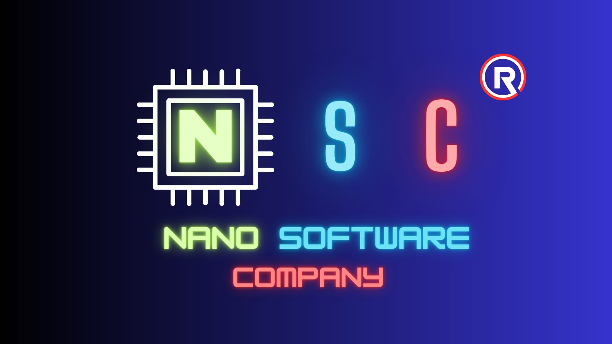

☰
NSC Gizlilik Politikası
Son güncellenme: 25/11/2023
Güvenliğiniz bizim için çok önemli. Bu sebeple bizimle paylaşacağınız kişisel verileriniz hassasiyetle korunmaktadır.
NSC, veri sorumlusu olarak, bu gizlilik ve kişisel verilerin korunması politikası ile, hangi kişisel verilerinizin hangi amaçla işleneceği, işlenen verilerin kimlerle ve neden paylaşılabileceği, veri işleme yöntemimiz ve hukuki sebeplerimiz ile; işlenen verilerinize ilişkin haklarınızın neler olduğu hususunda sizleri aydınlatmayı amaçlıyoruz.
Toplanan Kişisel Verileriniz, Toplanma Yöntemi ve Hukuki Sebebi
IP adresiniz ve kullanıcı aracısı bilgileriniz, sadece analiz yapmak amacıyla ve çerezler (cookies) vb. teknolojiler vasıtasıyla, otomatik veya otomatik olmayan yöntemlerle ve bazen de analitik sağlayıcılar, reklam ağları, arama bilgi sağlayıcıları, teknoloji sağlayıcıları gibi üçüncü taraflardan elde edilerek, kaydedilerek, depolanarak ve güncellenerek, aramızdaki hizmet ve sözleşme ilişkisi çerçevesinde ve süresince, meşru menfaat işleme şartına dayanılarak işlenecektir.
Kişisel Verilerinizin İşlenme Amacı
Bizimle paylaştığınız kişisel verileriniz sadece analiz yapmak suretiyle; sunduğumuz hizmetlerin gerekliliklerini en iyi şekilde yerine getirebilmek, bu hizmetlere sizin tarafınızdan ulaşılabilmesini ve en üst düzeyde faydalanılabilmesini sağlamak; hizmetlerimizi, ihtiyaçlarınız doğrultusunda geliştirebilmek ve sizleri daha geniş kapsamlı hizmet sağlayıcıları ile yasal çerçeveler içerisinde buluşturabilmek ve kanundan doğan zorunlulukların (kişisel verilerin talep halinde adli ve idari makamlarla paylaşılması) yerine getirilebilmesi amacıyla; sözleşme ve hizmet süresince, amacına uygun ve ölçülü bir şekilde işlenecek ve güncellenecektir.
Toplanan Kişisel Verilerin Kimlere ve Hangi Amaçlarla Aktarılabileceği
Bizimle paylaştığınız kişisel verileriniz; faaliyetlerimizi yürütmek üzere hizmet aldığımız ve/veya verdiğimiz, sözleşmesel ilişki içerisinde bulunduğumuz, iş birliği yaptığımız, yurt içi ve yurt dışındaki 3. şahıslar ile kurum ve kuruluşlara ve talep halinde adli ve idari makamlara, gerekli teknik ve idari önlemler alınması koşulu ile aktarılabilecektir.
Kişisel Verileri İşlenen Kişi Olarak Haklarınız
KVKK madde 11 uyarınca herkes, veri sorumlusuna başvurarak aşağıdaki haklarını kullanabilir:
-Kişisel veri işlenip işlenmediğini öğrenme,
-Kişisel verileri işlenmişse buna ilişkin bilgi talep etme,
-Kişisel verilerin işlenme amacını ve bunların amacına uygun kullanılıp kullanılmadığını öğrenme,
-Yurt içinde veya yurt dışında kişisel verilerin aktarıldığı üçüncü kişileri bilme,
-Kişisel verilerin eksik veya yanlış işlenmiş olması hâlinde bunların düzeltilmesini isteme,
-Kişisel verilerin silinmesini veya yok edilmesini isteme,
-(e) ve (f) bentleri uyarınca yapılan işlemlerin, kişisel verilerin aktarıldığı üçüncü kişilere bildirilmesini isteme,
-İşlenen verilerin münhasıran otomatik sistemler vasıtasıyla analiz edilmesi suretiyle kişinin kendisi aleyhine bir sonucun ortaya çıkmasına itiraz etme,
-Kişisel verilerin kanuna aykırı olarak işlenmesi sebebiyle zarara uğraması hâlinde zararın giderilmesini talep etme, haklarına sahiptir.
Yukarıda sayılan haklarınızı kullanmak üzere nanosoftwarec@gmail.com üzerinden bizimle iletişime geçebilirsiniz.
İletişim
Sizlere hizmet sunabilmek amaçlı analizler yapabilmek için, sadece gerekli olan kişisel verilerinizin, işbu gizlilik ve kişisel verilerin işlenmesi politikası uyarınca işlenmesini, kabul edip etmemek hususunda tamamen özgürsünüz. Sitemizi kullanmaya devam ettiğiniz takdirde kabul etmiş olduğunuz tarafımızca varsayılacak olup, daha ayrıntılı bilgi için bizimle nanosoftwarec@gmail.com e-mail adresi üzerinden iletişime geçmekten lütfen çekinmeyiniz.
Bu gizlilik politikası, NSC tarafından resmi olarak oluşturulmuştur.
NSC® - Tüm hakları saklıdır.